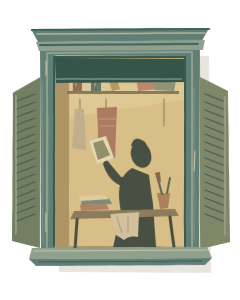
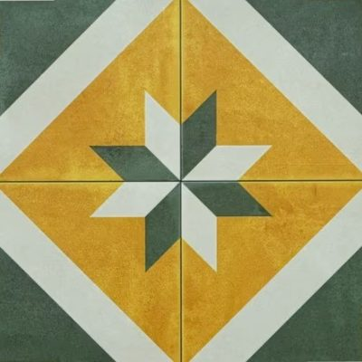
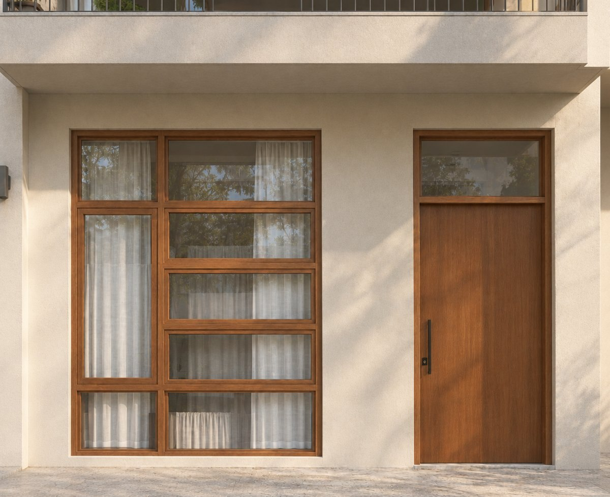
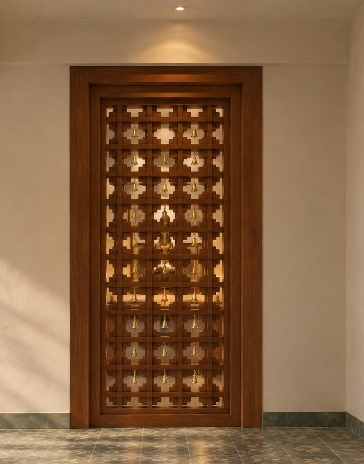

03 / MATERIAL STUDIES
An ongoing
experiment.
Texture, colour, finish, possibility.
A closer look at what spaces are made of.


01Pattern, colour, repetition
Athangudi tiles
Handmade hydraulic tiles from Athangudi, Tamil Nadu. A study in the patterns that emerge when four tiles meet.

02Wood & movement
Door warping
An illustrated guide to timber, moisture and the movement of a door.

03Teak, brass, joinery
Little pieces, joined together
A repeating module of stepped teak blocks, with brass bells set into each bay. Explore the jamb, the jali and the joinery.